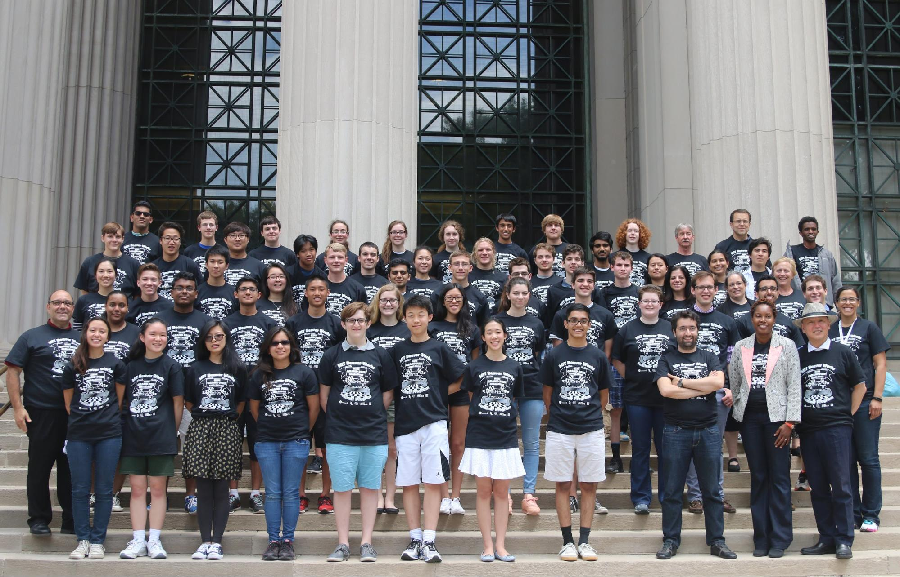

Because of all the team building and cooperation required to succeed, BWSI taught lots of skills to facilitate contributing to group environments. Between communication lectures, disagreements about code, and having to spend 40 hours a week together investing ourselves into the same project, everyone would have to be on the same page for a mission like ours to come to fruition. This forced us to consider each of ourselves merely a part of the bigger picture that is a team; we had to figure out what it is that each of us had to contribute, along with observing what each of our teammates also had to offer. Needing a functional group dynamic to accomplish our goals also made it necessary to constantly evaluate the best way to relate with our teammates: observing their apparent mood or emotions, getting opinions and feedback on proposed idea, and in general establishing a stable line of talking and listening. Overall, we were taught how to work as a team successfully through personal relations and open communications.
BWSI brought together students from different backgrounds and cultures in a collaborative and supportive spirit. From this experience we have gained knowledge of many things, from building new friendships to manipulating robots and understanding their underlying structure. As much as the do not want to admit it each and every student has changed so much in the last 4 weeks.
On behalf of us, and all the students who participated in the BWSI program, a massive thank you goes out to Dr. Bob Shin for creating this great opportunity that brought all of us together, and to MIT for hosting this program. Thanks go out to all the guest presenters who took the time to give wonderful lectures to the class. Thank you so much to everyone who played any part in making this incredible chance for us.
